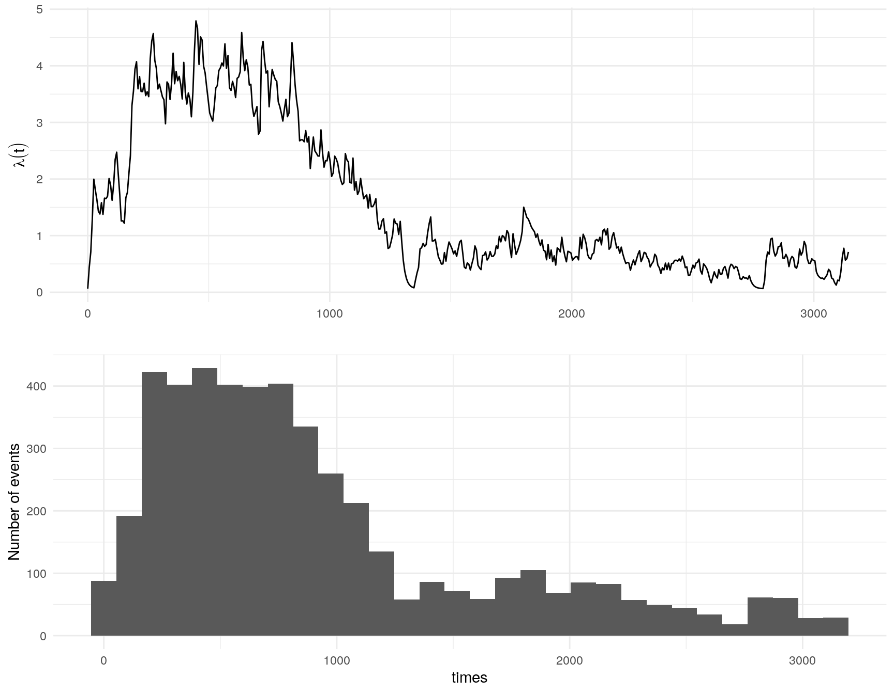
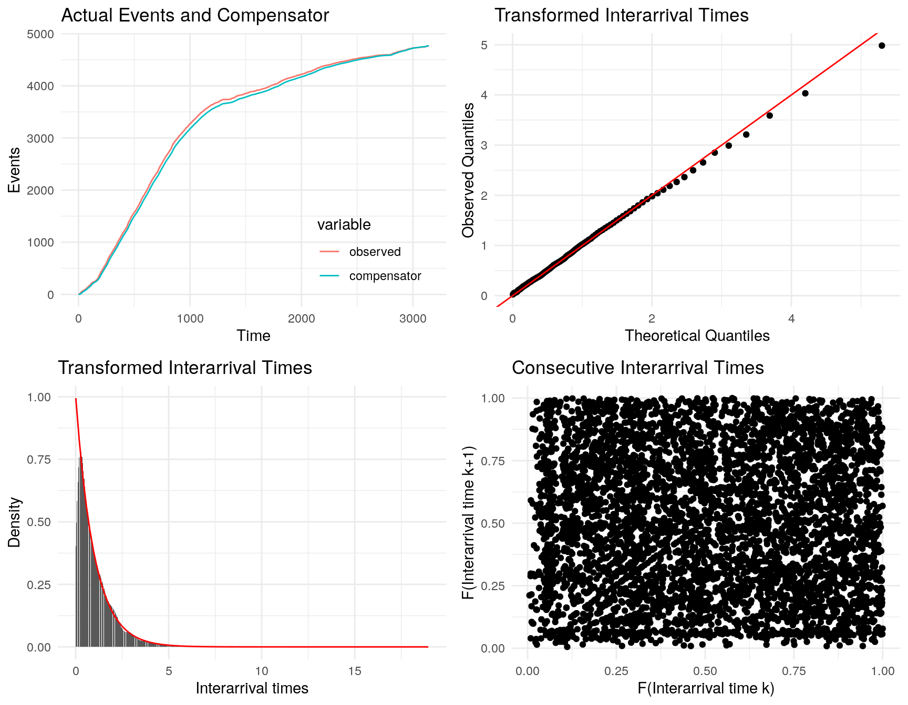
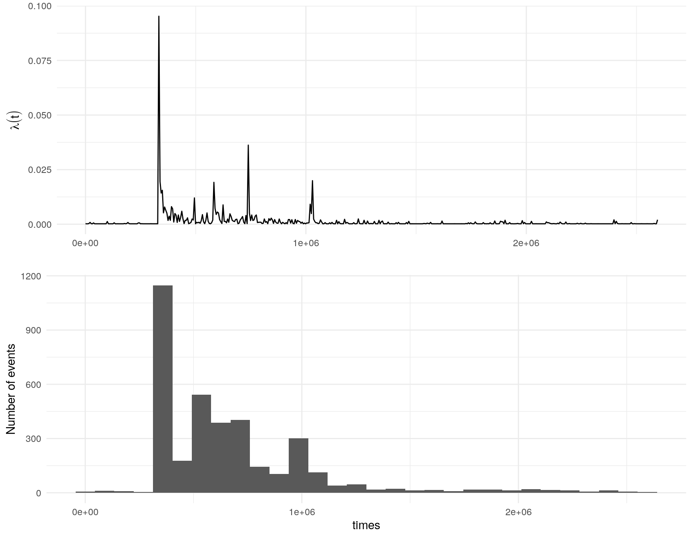
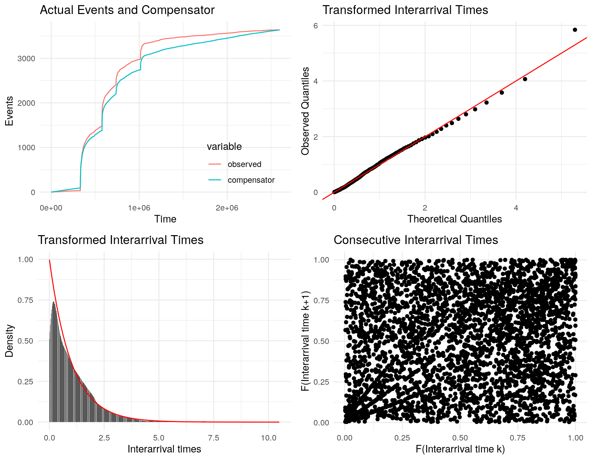

Chapter 2 Hawkes process
A univariate Hawkes process is defined to be a self-exciting temporal point process where the conditional intensity function is given by
\[\lambda(t) = \mu(t) + \Sigma_{i:\tau_i<t}\nu(t-\tau_i)\] where where \(\mu(t)\) is the background rate of the process and \(\Sigma_{i:\tau_i<t}\nu(t-\tau_i)\) is some historic temporal dependence. First introduced by Hawkes (1971), the classic homogeneous formulation is:
\[\lambda(t) = \mu + \alpha \Sigma_{i:\tau_i<t}\text{exp}(-\beta * (t-\tau_i)) \]
2.1 The fit_hawkes() function
## function (times, parameters = list(), model = 1, marks = c(rep(1,
## length(times))), tmb_silent = TRUE, optim_silent = TRUE,
## ...)
## NULL2.1.1 Fitting a Hawkes model
A NIWA scientist found a working USB in the scat of a leopard seal, they then tweeted about it in the hopes of finding its owner.
## [1] "2019-02-07 06:50:08 UTC" "2019-02-07 06:50:08 UTC"
## [3] "2019-02-07 06:49:22 UTC" "2019-02-07 06:48:48 UTC"
## [5] "2019-02-07 06:47:52 UTC" "2019-02-07 06:47:42 UTC"## numeric time stamps
times <- unique(sort(as.numeric(difftime(retweets_niwa ,min(retweets_niwa),units = "mins"))))
(#fig:plot hist)Observed counts of retweet times
params <- c(mu = 9, alpha = 3, beta = 10)
## must have compiled TMB templates first use compile_stelfi()
fit <- fit_hawkes(times = times, parameters = params) ## Estimate Std. Error
## mu 0.06328099 0.017783908
## alpha 0.07596531 0.007777899
## beta 0.07911346 0.008109789
##
## Asymptotic one-sample Kolmogorov-Smirnov test
##
## data: interarrivals
## D = 0.031122, p-value = 0.0001937
## alternative hypothesis: two-sided
##
##
## Box-Ljung test
##
## data: interarrivals
## X-squared = 3.3923, df = 1, p-value = 0.0655
2.1.2 Fitting an ETAS-type marked model
Here we fit a univariate marked Hawkes process where the conditional intensity function is given by
\[\lambda(t; m(t)) = \mu + \alpha \Sigma_{i:\tau_i<t}m(\tau_i)\text{exp}(-\beta * (t-\tau_i)) \] where \(\mu\) is the background rate of the process and \(m(t)\) is the temporal mark. Each event \(i\) has an associated mark \(\tau_i\) that multiples the self-exciting component of \(\lambda\).
In this example, the events are earthquakes and the marks are the Richter magnitude of each earthquake.
## Simple feature collection with 6 features and 3 fields
## Geometry type: POINT
## Dimension: XY
## Bounding box: xmin: 172.3641 ymin: -43.63492 xmax: 172.7936 ymax: -43.42493
## CRS: +proj=longlat +datum=WGS84 +no_defs +ellps=WGS84 +towgs84=0,0,0
## origintime magnitude depth geometry
## 1 2014-12-24 07:46:00 3.208996 13.671875 POINT (172.7133 -43.57944)
## 2 2014-12-24 06:43:00 4.109075 5.820312 POINT (172.7204 -43.55752)
## 3 2014-12-14 08:53:00 3.240377 5.058594 POINT (172.3641 -43.62563)
## 4 2014-12-12 13:37:00 4.459034 9.394531 POINT (172.368 -43.63492)
## 5 2014-11-20 08:24:00 3.116447 10.039062 POINT (172.7836 -43.42493)
## 6 2014-11-18 14:19:00 3.158710 11.269531 POINT (172.7936 -43.4897)earthquakes <- earthquakes[order(earthquakes$origintime),]
earthquakes <- earthquakes[!duplicated(earthquakes$origintime),]
times <- earthquakes$origintime
times <- as.numeric(difftime(times , min(times), units = "mins"))
marks <- earthquakes$magnitude
params <- c(mu = 3, alpha = 0.05, beta = 1)
## must have compiled TMB templates first use compile_stelfi()
fit <- fit_hawkes(times = times, parameters = params, marks = marks)
## print out estimated parameters
pars <- get_coefs(fit)
pars## Estimate Std. Error
## mu 0.0002001766 1.206014e-05
## alpha 0.0005125373 2.934243e-05
## beta 0.0020558328 1.204552e-04
##
## Asymptotic one-sample Kolmogorov-Smirnov test
##
## data: interarrivals
## D = 0.035665, p-value = 0.0001912
## alternative hypothesis: two-sided
##
##
## Box-Ljung test
##
## data: interarrivals
## X-squared = 104.09, df = 1, p-value < 2.2e-16
2.2 The fit_hawkes_cbf() function
## function (times, parameters = list(), model = 1, marks = c(rep(1,
## length(times))), background, background_integral, background_parameters,
## background_min, tmb_silent = TRUE, optim_silent = TRUE)
## NULL2.2.1 Fitting an inhomogenous Hawkes process
Here we fit a univariate inhomogenous marked Hawkes process where the conditional intensity function is given by
\[\lambda(t) = \mu(t) + \alpha \Sigma_{i:\tau_i<t}\text{exp}(-\beta * (t-\tau_i)) \] The background \(\mu(t)\) is time varying, rather than being constant.
The following example uses simulated data.
set.seed(1)
library(hawkesbow)
# Simulate a Hawkes process with mu = 1+sin(t), alpha=1, beta =2
times <- hawkesbow::hawkes(1000, fun=function(y) {1+0.5*sin(y)}, M=1.5, repr=0.5, family="exp", rate=2)$pWe will attempt to recover these parameter values, modelling the background as $ (t) = A + Bsin(t)$. The background will be written as a function of \(x\) and \(y\), where \(A = e^x\) and \(B= logit(y) e^x\). This formulation ensures the background is never negative.
## The background function must take a single parameter and the time(s) at which it is evaluated
background <- function(params,times){
A = exp(params[[1]])
B = stats::plogis(params[[2]]) * A
return(A + B*sin(times))
}
## The background_integral function must take a single parameter and the time at which it is evaluated
background_integral <- function(params,x){
A = exp(params[[1]])
B = stats::plogis(params[[2]]) * A
return((A*x)-B*cos(x))
}
param = list(alpha = 0.5, beta = 1.5)
background_param = list(1,1)
fit <- fit_hawkes_cbf(times = times, parameters = param, background = background, background_integral = background_integral, background_parameters = background_param)The estimated values of \(A\) and \(B\) respectively are
## [1] 1.025526## [1] 0.5635566The estimated values of \(\alpha\) and \(\beta\) respectively are:
## alpha beta
## 1.040863 2.179564References
Hawkes, AG. 1971. “Spectra of Some Self-Exciting and Mutually Exciting Point Processes.” Biometrika.